一、 选择器
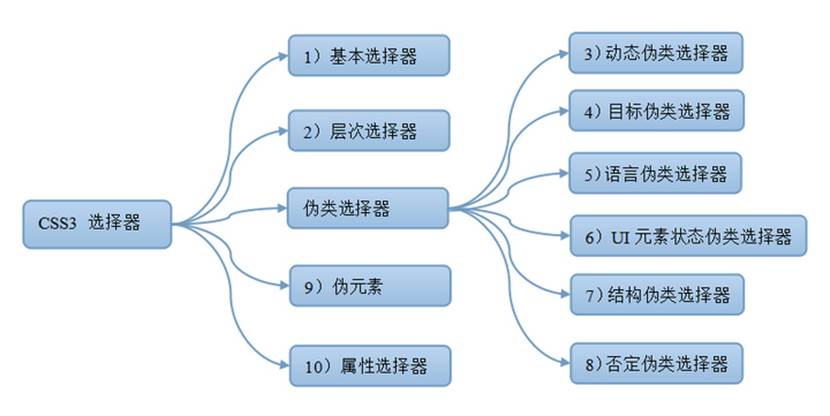
二、 选择器
1、 基本选择器
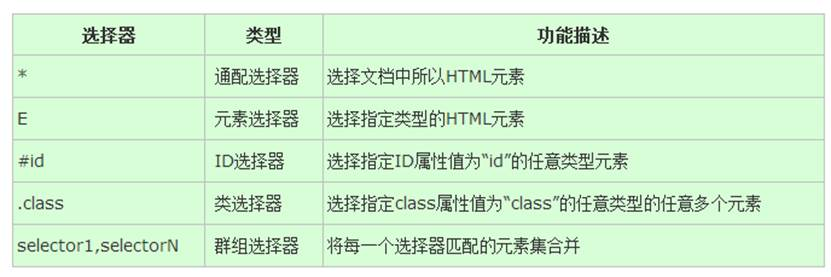
2、 （层次）关系选择器（~ + >）
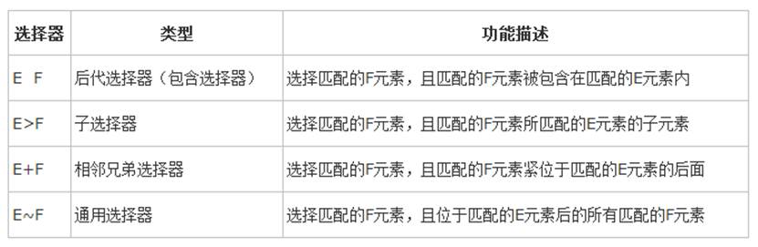
~选择元素下边的所有兄弟节点
注意:兄弟选择器选中的是【E标签之后】的所有兄弟F
<div>
<p>中国十大杰出人物</p>
<p>①别人家的孩子</p>
<p>②别人家的爸爸</p>
<p>③别人家的妈妈</p>
<p>④别人家的老公</p>
<p>⑤别人家的老婆</p>
<p>⑥别人家的公公</p>
<p>⑦别人家的婆婆</p>
<p>⑧别人家的公司</p>
<p>⑨别人家的领到</p>
<p>⑩别人家的员工</p>
</div>
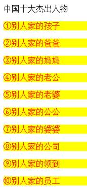
+选择当前标签下边离其最近的一个标签
p+span{color:red; background: #ff0;}
<div>
<p>1212</p>
<span>span</span><span>span2</span>
<p>12121</p>
<span>span</span>
</div>
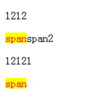
>选择子元素的一个方式
p>b{color:red; background: #ff0;}
<p>ppp<u><b>uuuuuuuuu</b></u>ppp<b>bbbbbb</b>p</p>
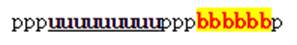
3、 动态伪类选择器
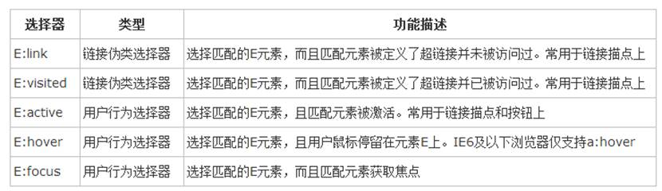
：focus 获取光标时，获得焦点
input:focus{border:1px solid #F00;}
input{outline:none;}
4、 目标伪类选择器
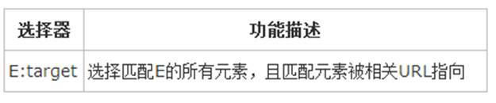
：target目标元素
div{margin-top:600px;}
:target h3{color:#f00;}
<a href="#html">html</a>
<a href="#css">css</a>
<a href="#js">js</a>
<div id="html">
<h3>html是什么</h3>
<p>html是xxx</p>
</div>
<div id="css">
<h3>css是什么</h3>
<p>css是xxx</p>
</div>
<div id="js">
<h3>js是什么</h3>
<p>js是xxx</p>
</div>
5、 语言伪类选择器
q:lang(no){quotes: "~" "~"}
<p>:lang 伪类允许您为不同的语言定义特殊的规则。在下面的例子中，在下面的例子中，:lang 类为带有值为 "no" 的 lang 属性的 q 元素定义引号的类型：</p>
<p>一些文本 <q lang="no">段落中的引用</q> 一些文本。</p>
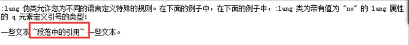
6、 UI元素状态伪类选择器
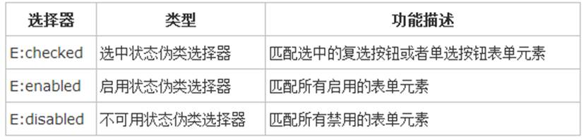
：checked 选择的时候
input[type="checkbox"]:checked+span{background:red;}
<input type="checkbox"><span>span1</span>
：enabled 可用状态
input:enabled{background:#0F0;}
<input type="text">
<input type="text" disabled>
<input type="text">
：disabled 禁止状态
input:disabled{background:#000;}
<input type="text">
<input type="text" disabled>
<input type="text">
：read-write 可读写的元素 （火狐不支持需要加前缀-moz-）
input:-moz-read-write{background:#F00;}
：read-only 只读元素 （火狐不支持需要加前缀-moz-）
input:read-only{background:#C63;}
<input type="text" readonly>
：：selection 选中元素的一个操作（火狐不支持需要加前缀-moz-）
::selection{color:#f00}
：和：：的区别
单冒号叫做伪类（指针对这个标签的一个动作），双冒号叫做伪元素（类似于将某一个东西加入在其他元素上）
7、 结构伪类选择器
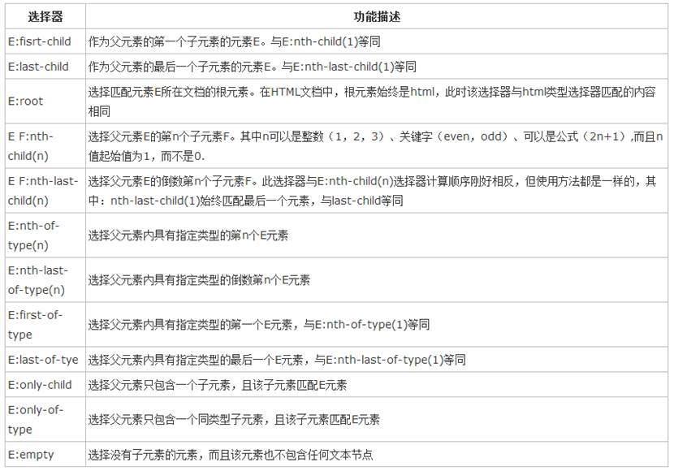
E：nth-child()
括号里可以是数字（数字从1开始），也可以是一个n，n是从0一直++的这样一个数，利用n可以实现隔行变色效果 even偶数 odd奇数
E：first-child 第一个
li:first-child{background: #f00;}
E：last-child 最后一个
li:last-child{background: #f00;}
li:nth-child(1){background: #f00;}
li:nth-child(n){background: #f00;}
li:nth-child(even){background: #f00;}
li:nth-child(odd){background: #f00;}
li:nth-child(2n+1){background: #f00;}
<ul>
<li>我是爹地的第1个孩子</li>
<li>我是爹地的第2个孩子</li>
<li>我是爹地的第3个孩子</li>
<li>我是爹地的第4个孩子</li>
<li>我是爹地的第5个孩子</li>
<li>我是爹地的第6个孩子</li>
<li>我是爹地的第7个孩子</li>
<li>我是爹地的第8个孩子</li>
<li>我是爹地的第9个孩子</li>
<li>我是爹地的第10个孩子</li>
</ul>
E:nth-last-child(n)倒数第几个
li:nth-last-child(2){background: #f00;}
E:nth-of-type(n)第几个
li:nth-of-type(5){background: #0081C2;}
E：nth-last-of-type(n)倒数第几个
li:nth-last-of-type(1){background:#ff0;}
E：first-of-type第一个
li:first-of-type{background: #0070A9;}
E：last-of-type最后一个
li:last-of-type{background: #0070A9;}
E：only-child 只有一个的时候
li:only-child{background: #f00;}
E:only-of-type只有一个
dt:only-of-type{background: #f00;}
：empty选择为空的元素
p:empty{height:25px;border:1px solid #ddd;background:#eee;
<p>我是父亲的第1个子元素p</p>
<p></p>
<p>我是父亲的第3个子元素p</p>
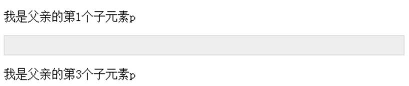
8、 否定伪类选择器
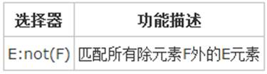
：not()取反
p{color:#ff0;}
:not(p){color: #f00;}
<h1>这是一个标题</h1>
<p>这是一个段落.</p>
<p>这是另一个段落.</p>
9、 属性选择器（区分不同的元素）
Input[value]{background:red;}
Input[value=”abc”]{background:green;}
Input[value^=”abc”]{background:#ff0;} 匹配起始位置
Input[value$=”abc”]{background:#00f;} 匹配结束位置
Input[value*=”abc”]{background:#00f;} 无论任何位置都可以匹配到
<input type=”text”>
<input type=”text” value=”abc”>
<input type=”text” value=”def”>
<input type=”text” value=”abc_123”>
<input type=”text” value=”def_abc”>
10、 伪元素选择器
：first-letter 对第一个字符的操作
P:first-letter{color:#f00}
：first-line 对第一行的操作
P:first-line{color:#ff0}
：after 指定元素之后
：before 指定元素之前
：：selection 选中元素的一个操作（火狐不支持需要加前缀-moz-）
::selection{color:#f00}
三、 文本属性
1、 文本的阴影text-shadow
Eg：text-shadow:5px 5px 5px #f66;（参数形式为X坐标 Y坐标 阴影模糊度 颜色）
可以写多个阴影中间用“，”隔开
火焰文字效果：
text-shadow:0 0 4px white,0 -5px 4px #ff3,2px -10px 6px #fd3,-2px -15px 11px #f80,2px -25px 18px #f20;
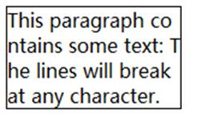
2、 文本溢出text-overflow
值：clip 无省略号 ellipsis 省略号
配合width和overflow:hidden和white-space:nowrap一块使用
3、 word-wrap：在长单词或URL地址内部进行换行
.test{
width:130px;
border:1px solid #000000;
word-wrap:break-word;
}
<p class="test"> This paragraph contains a very long word: thisisaveryveryveryveryveryverylongword. http://www.baidu.com The long word will break and wrap to the next line.</p>
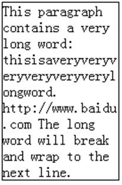
4、 使用服务端字体
@font-face：设置字体
@font-face{
font-family: name;
src:url(VLADIMIR.TTF);
}
P{
font-family: name;
font-size: 100px;
}
5、 使用服务端字体
<link rel="stylesheet" type="text/css" href="iconfont/iconfont.css" />
<i class="iconfont"> </i>
<i class="iconfont icon-pengyou"></i>
四、 背景相关样式
1、background-clip 指定背景的显示范围 border-box padding-box content-box(与背景的绘制起点background-origin)
div{
width: 400px;
height: 300px;
margin: 50px auto;
background: url(img/sky.jpg);
padding: 20px;
border: 10px dashed #ccc;
}
div:nth-child(1){
-webkit-background-clip: content-box;
-moz-background-clip: content-box;
background-clip: content-box;
}
div:nth-child(2){
-webkit-background-clip: border-box;
-moz-background-clip: border-box;
background-clip: border-box;
}
div:nth-child(3){
-webkit-background-clip: padding-box;
-moz-background-clip: padding-box;
background-clip: padding-box;
}
<div >
背景图片相关新增属性
</div>
<div >
背景图片相关新增属性
</div>
<div >
背景图片相关新增属性
</div>
2、background-origin 指定绘制背景图像时的起点border-box padding-box content-box
background-size指定背景中图像的尺寸
cover此时会保持图像的纵横比并将图像缩放成将完全覆盖背景定位区域的最小大小。
div{
width: 200px;
height:200px;
border: 10px dashed #f66;
background: url(img/flower-red.png) no-repeat;
padding: 20px;
}
div:nth-child(1){
background-origin:content-box;
background-size: 30px 30px;
/*-webkit-background-size: ;
background-size: ;*/
}
div:nth-child(2){
background-origin:padding-box;
background-size: 30px auto;
}
div:nth-child(3){
background-origin:border-box;
background-size: cover;
}
3、多张背景图片的设置用“，”隔开
div{
width: 800px;
height: 600px;
background-image: url(img/flower-green.png),url(img/flower-red.png),url(img/sky.jpg);
background-repeat:repeat-y,repeat-x,no-repeat;
background-position: 90% 10%,30% 80%,center;
}
注：第一个定义的背景图片在最上面的，最后定义的是在最下面的。使用background-repeat和background-position可以单独指定背景图像中某个文件的平铺方式与放置的位置
五、 圆角的用法border-raidus
1、border-radius: 10px; 一个值表示上下左右
border-radius: 10px 20px; 第一个值表示左上角、右下角；第二个值表示右上角、左下角
border-radius: 10px 20px 30px; 第一个值表示左上角；第二个值表示右上角、左下角；第三个值表示右下角。
border-radius:10px 20px 30px 40px; 左上角 右上角 右下角 左下角
2、使用图像边框
border-image:url("url") A B C D/border-width
border-image 中必须至少指定5个参数，
第一个参数作为边框使用图像的路径，
后4个参数表示当浏览器自动吧边框所使用到的图像进行分隔时的上边距，右边距，下边距，左边距
border-width:表示边框的宽度
border-image: url(borderimage.png) 25 25 25 25/5px
border-image:source slice outset repeat边框图片
border-image-source:url();使用绝对或相对地址指定图像。
border-image-slice:图片剪裁位置,其有1~4个参数.
border-image-repeat:repeat（重复）/round（平铺）/stretch（拉伸）;重复性border-image-outset:边框扩展
box-shadow:5px 5px 5px #f00;
六、 渐进增强和优雅降级的简介
渐进增强 progressive enhancement：针对低版本浏览器进行构建页面，保证最基本的功能，然后再针对高级浏览器进行效果、交互等改进和追加功能达到更好的用户体验
优雅降级 graceful degradation：一开始就构建完整的功能，然后再针对低版本浏览器进行兼容
区别：优雅降级是从复杂的现状开始，并试图减少用户体验的供给，而渐进增强则是从一个非常基础的，能够起作用的版本开始，并不断扩充，以适应未来环境的需要。降级（功能衰减）意味着往回看；而渐进增强则意味着朝前看，同时保证其根基处于安全地带。
.transition { /*渐进增强写法*/
-webkit-transition: all .5s;
-moz-transition: all .5s;
-o-transition: all .5s;
transition: all .5s;
}
.transition { /*优雅降级写法*/
transition: all .5s;
-o-transition: all .5s;
-moz-transition: all .5s;
-webkit-transition: all .5s;
}